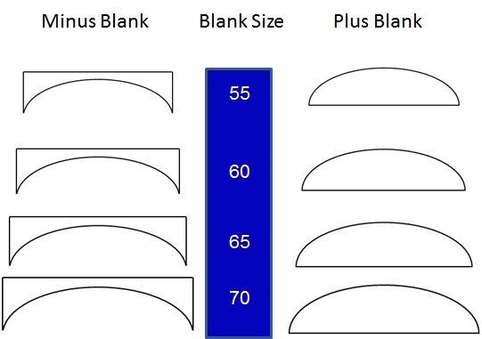

This is an IQ test for your lenses. As your prescription is different in each eye, you will have to work out the thickness in both eyes. The objective of this exercise is to work out the thickest part of each lens. This will allow you to work out how much thinning your lenses will require. Below are images relating to the different types of lenses that have been described on previous pages. Click on the lens you are interested in. This will take you to a calculator that will work out the thickest parts of your lenses.
Distance
Reading
Office
Bifocal
Varifocal
Intermediate

How Thick Will My Lenses Be?
Lens thickness can be combated by thinning your lenses. The guide below uses +/-
If your frame is wide on your face and quite big, then you might want to get extra thinning on the lens. If the frame is quite deep and your eye sits above the centre of the lens, then you might want get extra thinning as well.
 thinning your lenses will require. Below are images relating to the different types of lenses that have been described. Click on the lens you are interested in. This will take you to a calculator that will work out the thickest parts of your lenses.
Blank Size
Lenses are cut from square blanks. Blanks come in different sizes. The bigger the frame you choose, the bigger the blank size will be required. The bigger the blank, the thicker the lens becomes.
Decentration
Where your eye sits in the frame effects the thickness of the lenses. The centre of the lens will always be moved to be over the centre of your eye. This process is called decentration.
Minus Lens
The thickest part of the lens is on the outside. Ideally your eye will sit in the centre of your frame. If it does, the thicker parts of the lens will be cut away. If your eye sits a distance from the centre of the frame then the cut will include the thicker parts of the lens.
Plus Lens
The thickest part of the lens is in the centre. If the centre of your eye is in the centre of the frame, the cuts will go through thinner parts of the lens. If your eye sits away from the frame’s centre, then the cut will go through a central, thicker point.
thinning your lenses will require. Below are images relating to the different types of lenses that have been described. Click on the lens you are interested in. This will take you to a calculator that will work out the thickest parts of your lenses.


Lenses
Vertical Decentration
This process will be applied vertically if you go for a deep lens.